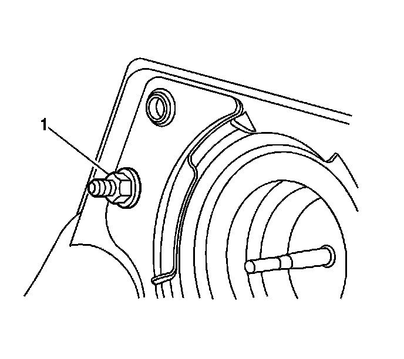
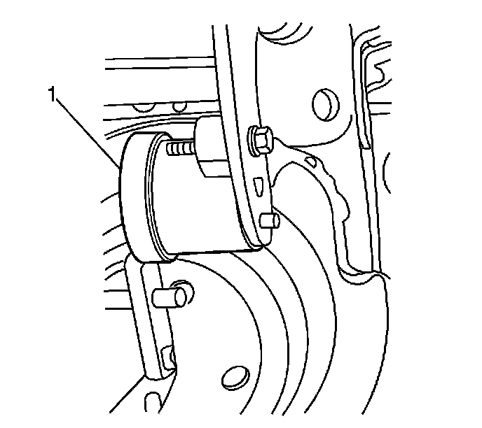
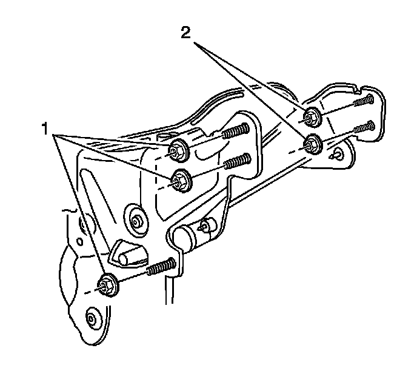
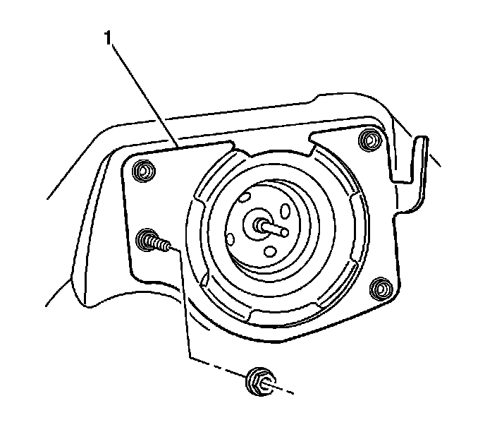
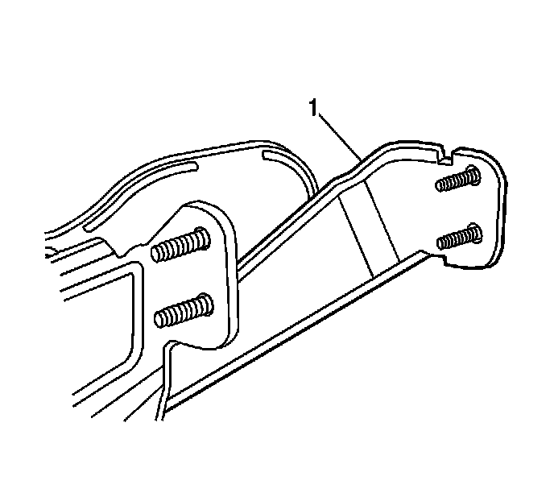

Brake Pedal Assy: Service and Repair
Brake Pedal Assembly Replacement
Removal Procedure
1. Remove the vacuum brake booster. Refer to Power Vacuum Brake Booster Replacement (LHD) (Power Vacuum Brake Booster Replacement (LHD))Power Vacuum Brake Booster Replacement (RHD) (Power Vacuum Brake Booster Replacement (RHD)) .

2. Remove the steering column support bracket to brake booster mounting plate mounting nut (1).
3. Without disconnecting the park brake cable, remove and reposition the park brake pedal assembly. Refer to Parking Brake Lever Pedal Assembly Replacement (LHD) (Parking Brake Lever Pedal Assembly Replacement (LHD))Parking Brake Lever Pedal Assembly Replacement (RHD) (Parking Brake Lever Pedal Assembly Replacement (RHD)) .
4. Without disconnecting the steering column from the intermediate shaft, lower the steering column assembly and support the column. Refer to Steering Column Replacement (Steering Column Replacement) .

5. Disconnect the electrical connector from the brake apply sensor (BAS) (1).

6. Remove the 3 brake pedal assembly to cowl mounting nuts (1).

7. Remove the 2 steering column support bracket to instrument panel (I/P) carrier mounting nuts (2).
8. Remove the 3 brake pedal assembly to I/P carrier mounting nuts (1).

9. Remove the brake booster mounting plate (1) from the cowl. This will remove the studs to allow for brake pedal removal.

10. Remove the steering column support bracket (1).
11. Remove the brake pedal assembly from the vehicle.
Installation Procedure
1. Install the brake pedal assembly to the vehicle.
2. Install the steering column support bracket (1).
3. Install the vacuum brake booster mounting plate (1) to the cowl and brake pedal assembly.
Notice: Refer to Fastener Notice (Fastener Notice) .
4. Install the 3 brake pedal assembly to cowl mounting nuts (1).
Tighten the nuts to 25 N.m (18 lb ft).
5. Install the 3 brake pedal assembly to I/P carrier mounting nuts (1).
Tighten the nuts to 25 N.m (18 lb ft).
6. Install the steering column support bracket to brake booster mounting plate mounting nut (2).
Tighten the nut to 25 N.m (18 lb ft).
7. Install the 2 steering column support bracket to I/P carrier mounting nuts (2).
Tighten the nuts to 25 N.m (18 lb ft).
8. Connect the electrical connector to the BAS (1).
9. Reposition and secure the steering column assembly. Refer to Steering Column Replacement (Steering Column Replacement) .
10. Reposition and secure the park brake pedal assembly. Refer to Parking Brake Lever Pedal Assembly Replacement (LHD) (Parking Brake Lever Pedal Assembly Replacement (LHD))Parking Brake Lever Pedal Assembly Replacement (RHD) (Parking Brake Lever Pedal Assembly Replacement (RHD)) .
11. Install the vacuum brake booster. Refer to Power Vacuum Brake Booster Replacement (LHD) (Power Vacuum Brake Booster Replacement (LHD))Power Vacuum Brake Booster Replacement (RHD) (Power Vacuum Brake Booster Replacement (RHD)) .
12. Recalibrate the brake pedal position sensor. Refer to Brake Pedal Position Sensor Replacement (Brake Pedal Position Sensor Replacement) .